Modelling forecast uncertainty
A Practical Guide to Model-Based, Bootstrap, and Conformal Prediction in R
Harsha Halgamuwe Hewage
Data Lab for Social Good Research Group, Cardiff University UK
2026/02/25
What we will cover
Why point forecasts fail and the necessity of quantifying risk
Model-Based Approaches: Using standard deviations and parametric assumptions
Bootstrapping: Generating sample paths to simulate complex, non-normal risks and “possible futures”
Conformal Prediction: Using calibration sets to create model-agnostic intervals with statistical guarantees
Comparative guide on picking the right method for your specific data challenges
Assumptions
- Technical Setup: You must have R and RStudio installed and be comfortable with basic coding syntax.
- Version Control: You should be able to use git to clone the workshop repository.
- No Proofs: This is not a theory-based course, we will not derive formulas or mathematical proofs for convergence.
- Practical Focus: Our goal is applied Uncertainty Quantification: understanding when to use specific tools to assess risk effectively.
What we will not cover
- Deep Theory: Detailed mathematical derivations or proofs of coverage guarantees.
- Different Distributions: Deep dives into specific distribution types (e.g., Poisson, Negative Binomial) beyond the fundamental Normal vs. Empirical distinction.
- Advanced Variants: We will not cover complex variations like Sieve Bootstrap or Adaptive Conformal Inference in depth.
- Model Tuning: We assume you can fit a basic model; we focus strictly on quantifying the errors of that model.
- Performance Evaluation: In this session, we will not cover how to evaluate probabilistic forecasts.
Materials
You can find the workshop materials here.
What is wrong with point forecasts?
The illusion of certainty in disease forecasting
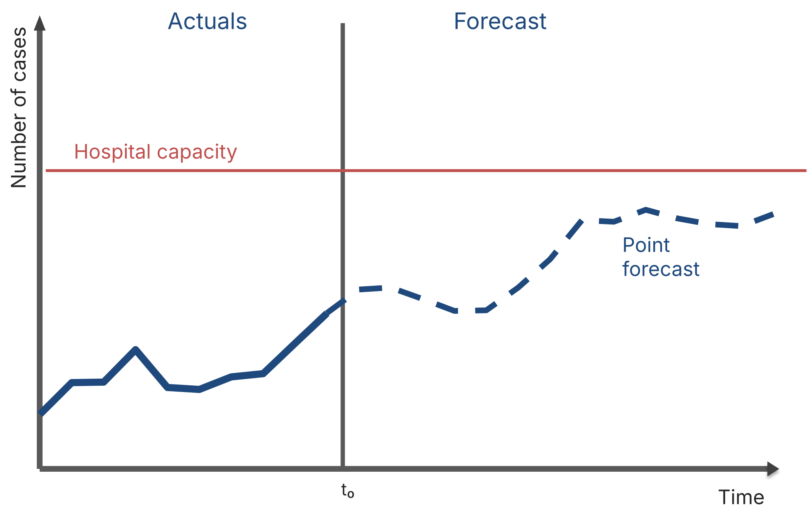
- A point forecast is typically just the mean or median of a distribution.
- In public health, the cost of being wrong is not symmetrical.
- Over-estimating cases might waste some supplies or under-estimating cases (missing an outbreak) costs lives.
- Point forecasts are of almost no value without accompanying prediction intervals because they tell you nothing about the probability of exceeding critical thresholds.
From “Will it happen?” to “What is the probability?”
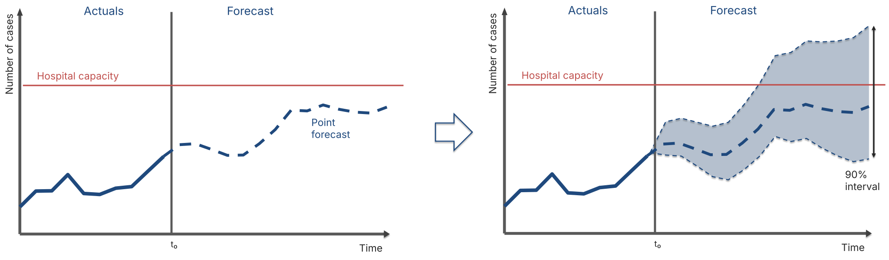
- We move from guessing a specific number to defining a range (e.g., 90% likely to fall between 100 and 500 cases).
- Climate data (rainfall, temperature) is inherently noisy and non-stationary.
- As climate volatility increases, the uncertainty in our disease models expands.
- We do not prepare for the mean scenario; we prepare for the extreme scenario. Uncertainty quantification allows us to ask: What is the probability we exceed hospital bed capacity?
Moving from “What is the number?” to “What is the risk?” using uncertainty quantification.
Types of uncertainty output
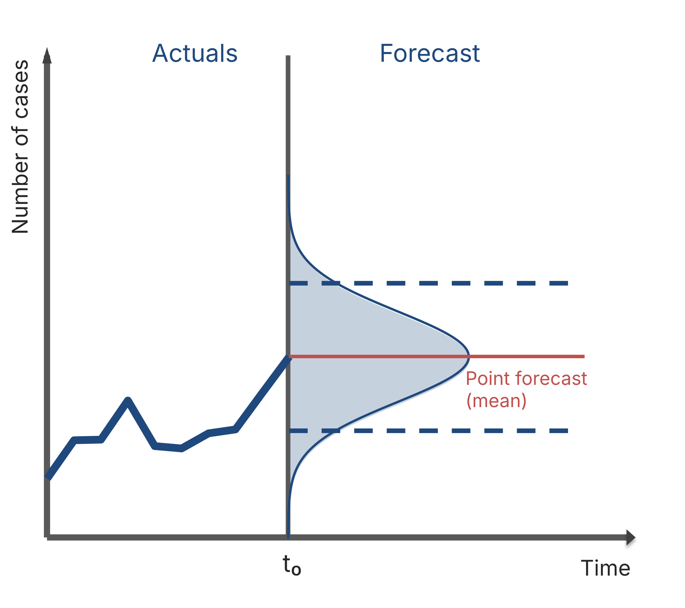
Distributions
The full range of possible future case counts, capturing the full range of potential outcomes across all time horizons. The point forecast is just the “typical” outcome.
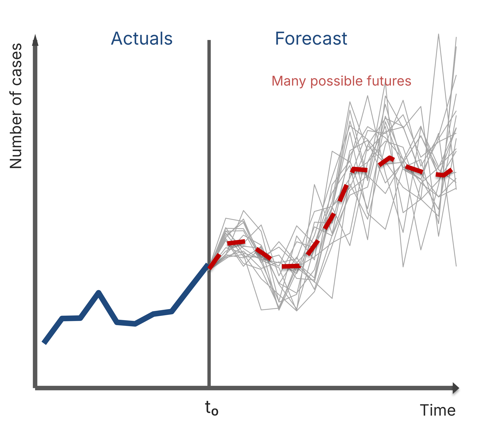
Sample Paths
Many simulated “possible futures” that help you see what could happen and summarize risk for totals, peaks, or other real-world planning questions.
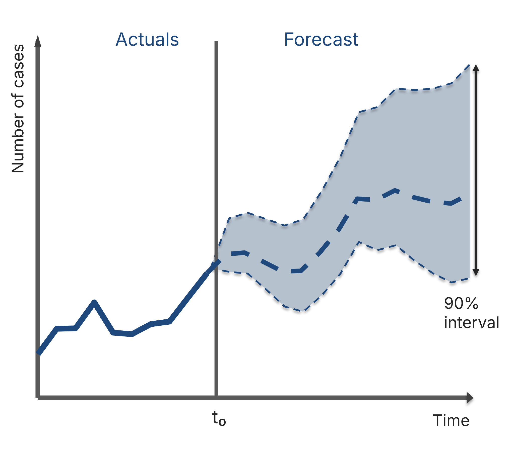
Prediction Intervals
A range (e.g., 95%) that shows where cases are likely to fall, helping you plan for high-demand scenarios, not just the average.
Uncertainty estimation in forecasting
Model-based Approaches
- Examples: ARIMA/state-space models
- Assumption: Explicit parametric error distribution
Model-agnostic Approaches
- Bootstrap: Residual bootstrap, block bootstrap
- Conformal predictions
Bayesian Approaches
- Bayesian: Posterior predictive distribution
- Depend on prior / resampling scheme
Model-dependent / Heuristic Approaches
- Quantile regression, ML-based quantile models
- Heuristic ML: Ensembles, MC dropout
Uncertainty estimation in forecasting
Model-based Approaches
- Examples: ARIMA/state-space models
- Assumption: Explicit parametric error distribution
Model-agnostic Approaches
- Bootstrap: Residual bootstrap, block bootstrap
- Conformal predictions
Bayesian Approaches
- Bayesian: Posterior predictive distribution
- Depend on prior / resampling scheme
Model-dependent / Heuristic Approaches
- Quantile regression, ML-based quantile models
- Heuristic ML: Ensembles, MC dropout
01
Model-based approaches using ARIMAX
Forecast distributions
In model-based approaches, we do not simulate future paths one by one. Instead, we assume that the forecast errors (residuals) follow a specific probability distribution.
A forecast \(\hat{y}_{T+h \mid T}\) is (usually) the mean of the conditional distribution
\(y_{T+h} \mid y_{1}, \ldots, y_{T}\).Most time series models produce normally (i.e., Gaussian) distributed forecasts.
The forecast distribution describes the probability of observing any future value.
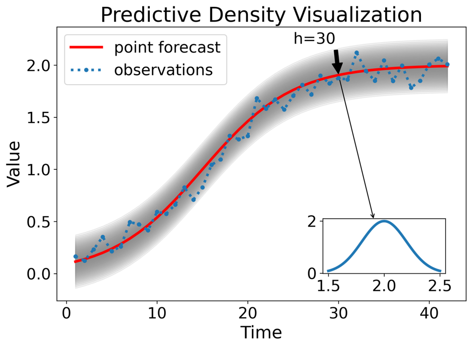
The model estimates the “center” (point forecast) and the “spread” (standard deviation) mathematically.
The Center (\(\hat{y}\)): The mean of the distribution.
The Spread (\(\sigma_h\)): The standard deviation of the forecast errors at horizon \(h\).
Forecast distributions using fable in R
Load Libraries
Load data and create the tsibble
Explore the timeseries plot
Forecast distributions using fable in R
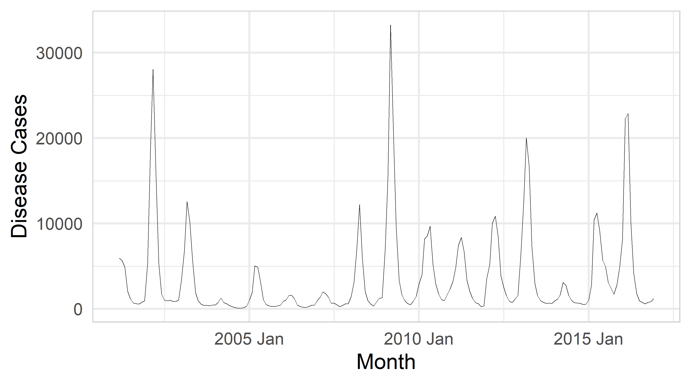
Forecast distributions using fable in R
Create train (2010 Jan - 2015 Dec) and test (2016 Jan - 2016 Dec) samples
Fit ARIMAX model using disease_cases as target variable and rainfall and temperature as predictors
Visualise forecast distribution
Code
fcst <- fc_arimax |>
mutate(disease_cases = distributional::dist_truncated(disease_cases, lower = 0), .mean=mean(disease_cases))
fitted_arimax <- fit_arimax |> augment()
ggplot(data = fcst, mapping = aes(x = time_period, ydist = disease_cases))+
ggdist::stat_halfeye(alpha = .4) +
geom_line(aes(y=.mean, colour ="Point Forecast"), linewidth = 1.75) +
geom_line(aes(y = .fitted, colour ="Fitted"), linewidth = 1.75, data = filter_index(fitted_arimax, "2015 Jan" ~ .)) +
geom_point(aes(y = .fitted, colour ="Fitted"), linewidth = 1.75, data = filter_index(fitted_arimax, "2015 Jan" ~ .)) +
geom_line(aes(y = disease_cases, colour ="Actual"), linewidth = 1.75, data = filter_index(brazil_dengue_tsb |> filter(location == 'Bahia'), "2016 Jan" ~ .)) +
geom_point(aes(y = disease_cases, colour ="Actual"), data = filter_index(brazil_dengue_tsb |> filter(location == 'Bahia'), "2016 Jan" ~ .))+
scale_color_manual(name=NULL,
breaks=c('Fitted', 'Actual',"Point Forecast"),
values=c('Fitted'='#E69F00', 'Actual'='#0072B2',"Point Forecast"="#000000"))+
theme_minimal(base_family = "Inter", base_size = 40) +
theme(panel.border = element_rect(color = "lightgrey", fill = NA))Forecast distributions using fable in R
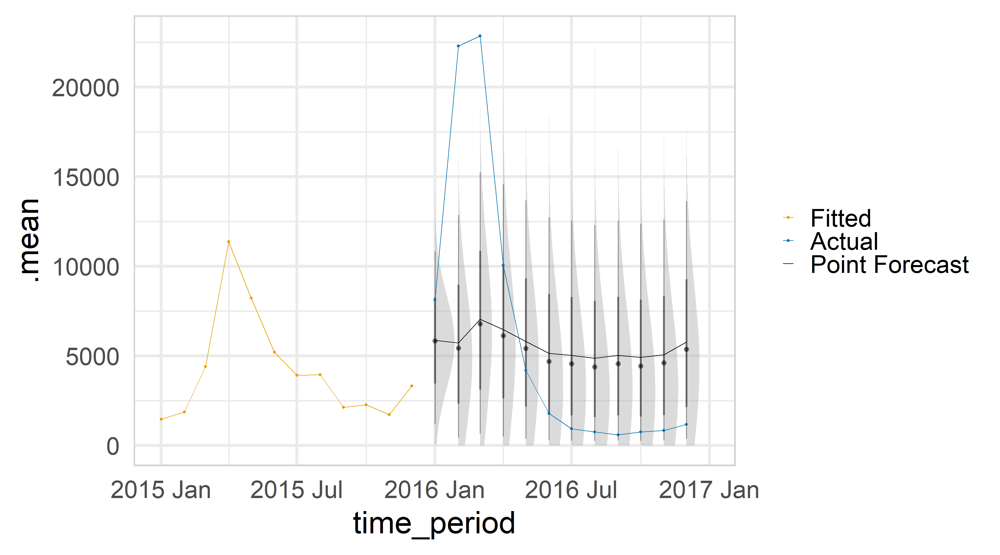
Now it is your turn.
Prediction intervals
A prediction interval gives a region within which we expect \(y_{T+h}\) to lie with a specified probability.
Assuming forecast errors are normally distributed, then a 95% PI is
\[ \hat{y}_{T+h \mid T} \pm 1.96\,\hat{\sigma}_h \]
where \(\hat{\sigma}_h\) is the standard deviation of the \(h\)-step-ahead forecast distribution.
- When \(h = 1\), \(\hat{\sigma}_h\) can be estimated from the residuals.
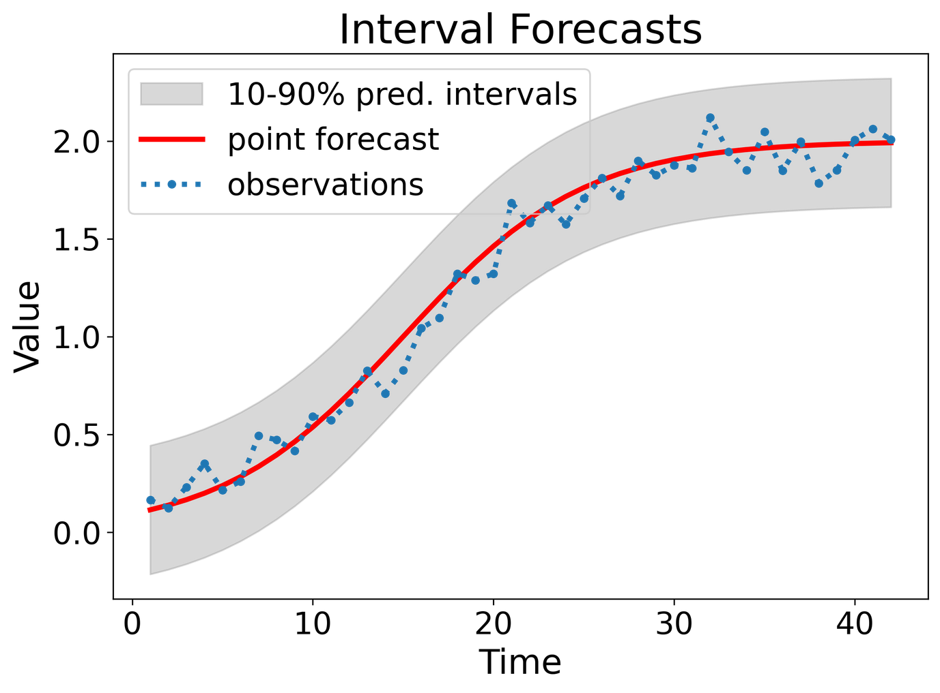
Prediction intervals require a stochastic model (with random errors, etc.).
For most models, prediction intervals get wider as the forecast horizon increases.
Check residual assumptions before believing them.
Prediction intervals using fable in R
Forecast intervals can be extracted using the hilo() function
Code
# A tsibble: 6 x 6 [1M]
# Key: location, .model [1]
location .model .mean `80%` `95%`
<chr> <chr> <dbl> <hilo> <hilo>
1 Bahia arimax 5800. [ 2510.9616, 9088.174]80 [ 770.0785, 10829.06]95
2 Bahia arimax 4896. [ -180.5130, 9971.543]80 [-2867.6000, 12658.63]95
3 Bahia arimax 6358. [ 643.5446, 12073.263]80 [-2381.7190, 15098.53]95
4 Bahia arimax 5504. [ -280.3819, 11287.723]80 [-3342.2744, 14349.62]95
5 Bahia arimax 4511. [-1273.7354, 10295.688]80 [-4335.9768, 13357.93]95
6 Bahia arimax 3396. [-2389.1946, 9181.817]80 [-5451.8564, 12244.48]95
# ℹ 1 more variable: time_period <mth>Prediction intervals using fable in R
Use level argument to control coverage.
Code
# A tsibble: 3 x 6 [1M]
# Key: location, .model [1]
location .model .mean `90%_lower` `90%_upper` time_period
<chr> <chr> <dbl> <dbl> <dbl> <mth>
1 Bahia arimax 5800. 1579. 10020. 2016 Jan
2 Bahia arimax 4896. -1619. 11411. 2016 Feb
3 Bahia arimax 6358. -977. 13693. 2016 MarVisualise the prediction intervals
Prediction intervals using fable in R
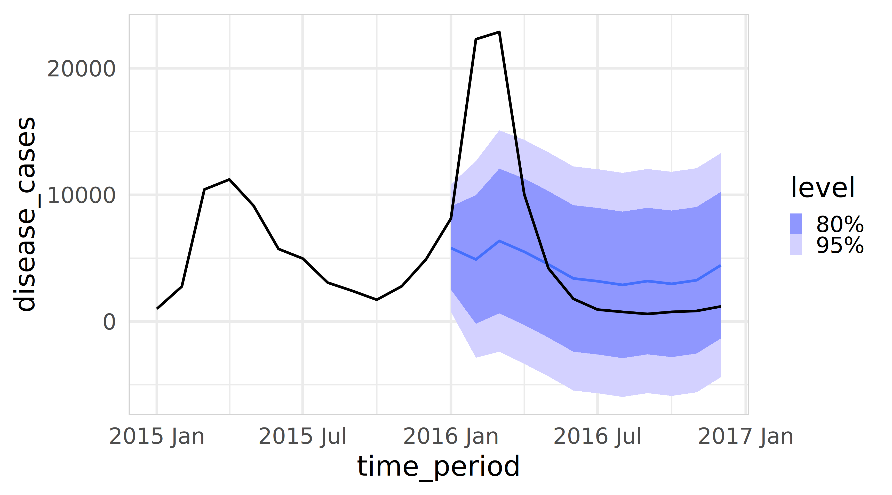
Now it is your turn.
Key assumptions
- Normality: The forecast errors (residuals) follow a symmetric Bell Curve.
- Uncorrelated: The model has captured all signal; the remaining errors have no pattern (white noise).
- Homoscedasticity: The volatility (variance) of errors is constant over time and does not explode during specific seasons.
- Best for: Stable, high-volume data where you need a quick, standard answer.
| Pros | Cons | When to Select |
|---|---|---|
| Speed & Standardization: Instant calculation using analytic formulas (e.g., \(\pm 1.96\sigma\)). It is the default output in almost all software, making it easy to reproduce and audit. | Symmetry Assumption: Assumes errors are symmetric. For low disease counts, this often produces physically impossible negative lower bounds. | High-Volume Data: When case counts are high (e.g., >100/month) and the distribution looks roughly Bell-shaped. |
| Stability: Performs reliably on data that is consistent, has a long history, and follows standard seasonal patterns. | Underestimated Risk: Often too narrow because it ignores parameter uncertainty (the risk that the model parameters themselves are slightly wrong). | Short Horizons: For 1-step ahead forecasts where the “fan” of uncertainty hasn’t had time to compound or break down. |
| Simplicity: Easy to explain to stakeholders as a “standard statistical range.” | Tail Sensitivity: If the data has “fat tails” (extreme outbreaks), the Normality assumption fails, and a 95% interval will not actually cover 95% of events. | Establishing a Baseline: Use this first to set a benchmark. If complex methods don’t beat this, stick with this. |
02
Bootstrapping time series
Forecast sample paths (Bootstrapping)
When a Normal distribution for the residuals is an unreasonable assumption (e.g., extreme outbreaks, skewed data), we use bootstrapping. This assumes that “future errors will look like past errors”.
- Instead of using a fixed formula, we simulate \(B\) different “possible futures” (sample paths) by randomly sampling from past residuals.
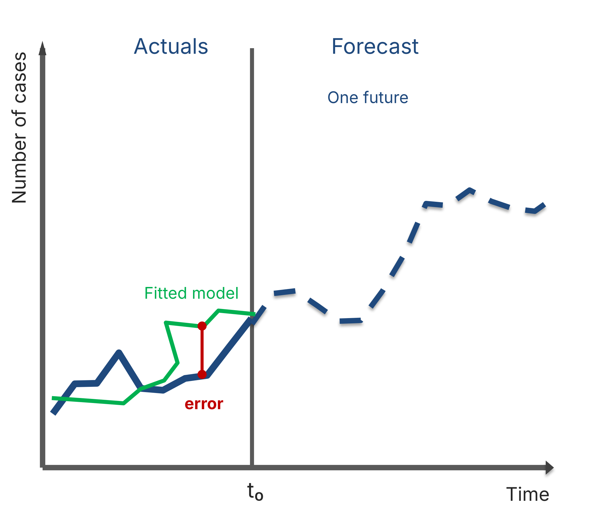
Resample: Take a random error (\(e^*\)) from the past.
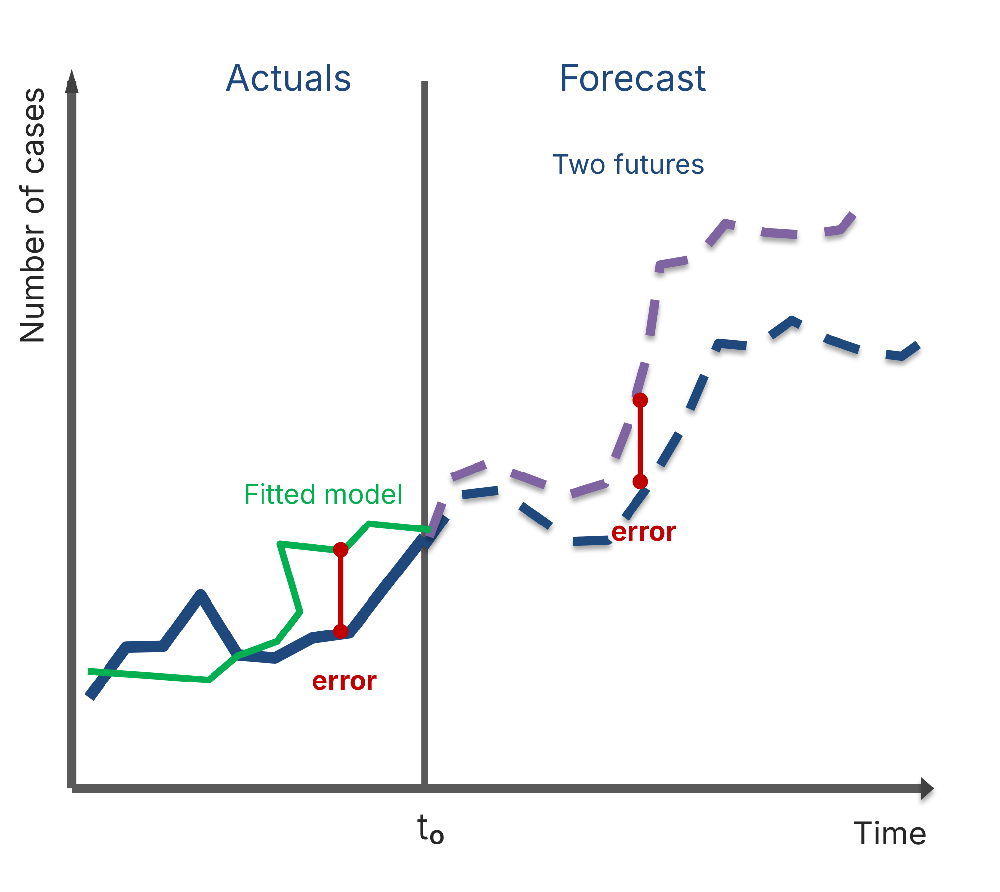
Step 1: \(y^*_{T+1} = \hat{y}_{T+1|T} + e^*_{T+1}\)
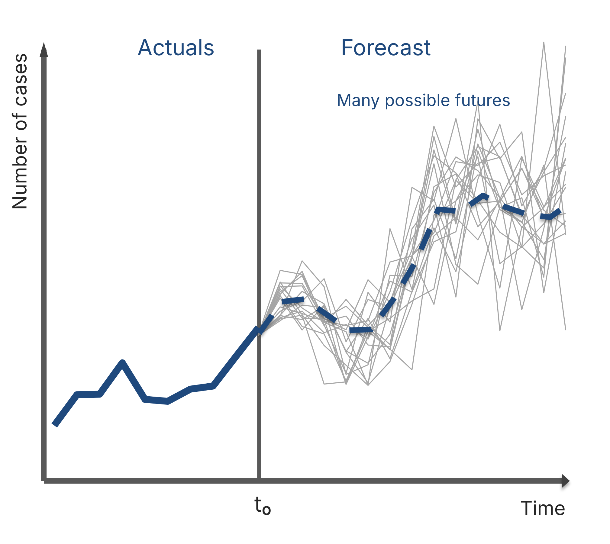
Iterate: Add \(y^*_{T+1}\) to the history and repeat: \(y^*_{T+2} = \hat{y}_{T+2|T+1} + e^*_{T+2}\)
Bootstrap sampling using fable in R
Use generate argument to forecast multiple paths.
Code
# A tsibble: 3 x 5 [1M]
# Key: location, .model, .rep [1]
location .model time_period .rep .sim
<chr> <chr> <mth> <chr> <dbl>
1 Bahia arimax 2016 Jan 1 5394.
2 Bahia arimax 2016 Feb 1 3781.
3 Bahia arimax 2016 Mar 1 4566.Visualise sample future paths
Code
sim <- fit_arimax |>
generate(new_data = brazil_dengue_tsb_future, bootstrap = TRUE, times = 5)
brazil_dengue_tsb |>
filter_index('2015 Jan' ~ .) |>
filter(location == 'Bahia') |>
ggplot(aes(x = time_period)) +
geom_line(aes(y = disease_cases), linewidth = 1.75) +
geom_line(aes(y = .sim, colour = as.factor(.rep)), linewidth = 1.75,
data = sim)+
labs(y = "Disease Cases", x = "Month", colour="Future") +
theme_minimal(base_family = "Inter", base_size = 40) +
theme(panel.border = element_rect(color = "lightgrey", fill = NA))Bootstrap sampling using fable in R
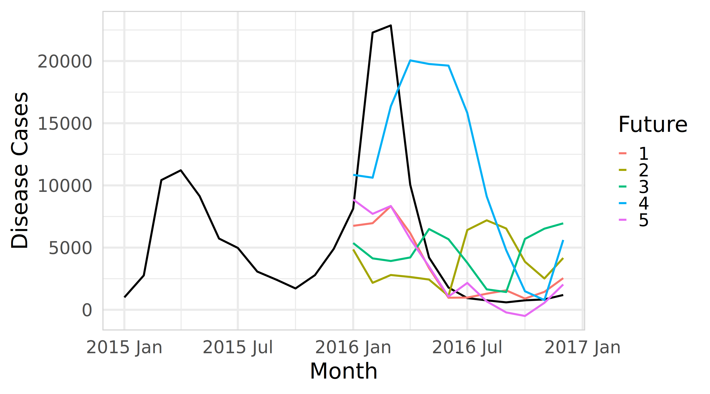
Forecast intervals from bootstrapped residuals
Forecast intervals can be extracted using the hilo() function
Code
# A tsibble: 3 x 9 [1M]
# Key: location, .model [1]
location .model time_period disease_cases .mean rainfall mean_temperature
<chr> <chr> <mth> <dist> <dbl> <dbl> <dbl>
1 Bahia arimax 2016 Jan sample[100] 5716. 224. 26.3
2 Bahia arimax 2016 Feb sample[100] 4551. 194. 26.0
3 Bahia arimax 2016 Mar sample[100] 5714. 382. 25.5
# ℹ 2 more variables: `80%` <hilo>, `95%` <hilo>Visualize the prediction intervals
Code
fit_arimax |>
forecast(new_data = brazil_dengue_tsb_future, bootstrap = TRUE, times = 100) |>
autoplot(brazil_dengue_tsb |>
filter(location == 'Bahia') |>
filter_index('2015 Jan' ~ .)) +
theme_minimal(base_family = "Inter", base_size = 40) +
theme(panel.border = element_rect(color = "lightgrey", fill = NA))Forecast intervals from bootstrapped residuals
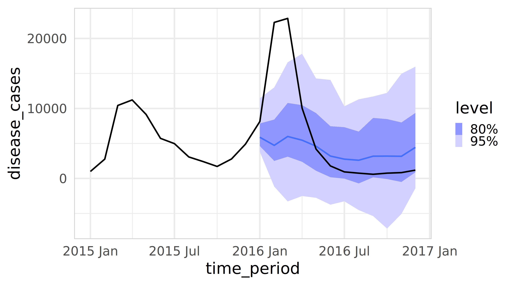
Now it is your turn.
Key assumptions
- Representativeness: The past residuals are a good sample of what could happen in the future.
- Independence (Standard): Residuals are uncorrelated (IID).
- Independence (Block): If residuals are dependent (autocorrelated), we must sample “blocks” of errors rather than single points to preserve the structure.
- Best for: “What-if” scenarios, cumulative risk, and explosive outbreaks.
| Pros | Cons | When to Select |
|---|---|---|
| Captures Asymmetry: Does not force a Bell Curve. It naturally handles skewed risk (e.g., cases can spike to 5,000 but cannot go below zero). | Computationally Expensive: Slower than model-based methods; requires generating and storing 1,000+ sample paths per series. | Explosive Outbreaks: When the risk is one-sided (e.g., a potential exponential spike in Dengue cases). |
| Path Dependency: Simulates connected trajectories. This allows you to calculate cumulative risk (e.g., “Probability that cases exceed capacity for 3 weeks in a row”). | The Autocorrelation Trap: Standard bootstrapping destroys temporal patterns. If residuals are dependent (sticky), you must use “Block Bootstrap,” which adds complexity. | Cumulative Risk Analysis: When stakeholders need to know the total case count over the next season, not just the peak. |
| Robustness: Works well when residuals have extreme outliers or “fat tails” that would break a normal distribution. | Data Hungry: Requires a long enough history of residuals to draw a representative sample. | Low Count Data: When a standard model is predicting negative numbers and you need a strict zero-bound. |
03
Conformal predictions
Conformal prediction intervals
Unlike Model-Based methods (which assume a distribution) or Bootstrapping (which assumes history repeats), Conformal Prediction focuses on the model’s past performance on unseen data. It asks: “How wrong was this model on the calibration set?” and uses that to build a rigorous interval for the future.
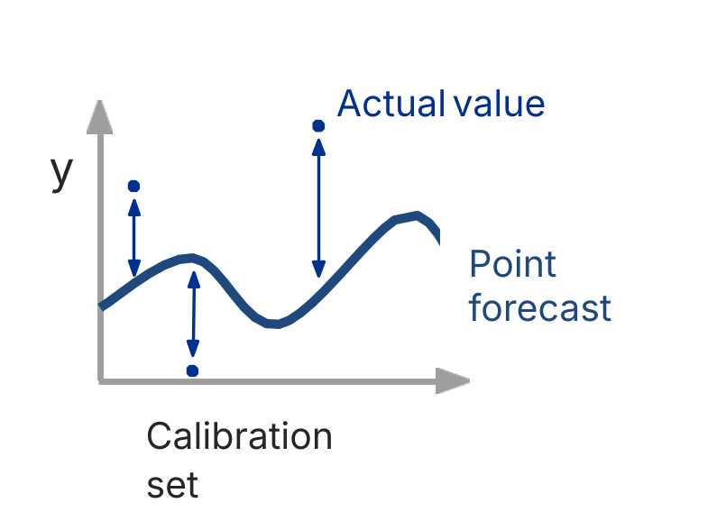
Train point forecast model on the training set and forecast on calibration set
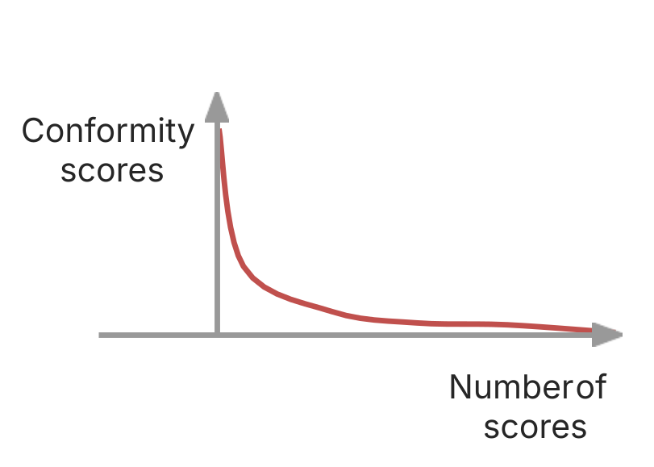
Get conformity scores and create a sorted list with absolute conformity scores
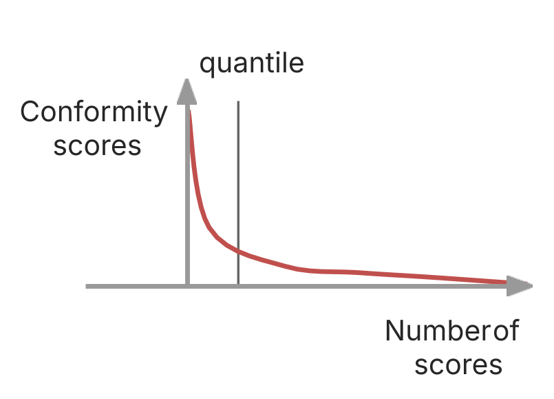
Select the quantile of the prediction interval
Conformal prediction intervals
Unlike Model-Based methods (which assume a distribution) or Bootstrapping (which assumes history repeats), Conformal Prediction focuses on the model’s past performance on unseen data. It asks: “How wrong was this model on the calibration set?” and uses that to build a rigorous interval for the future.
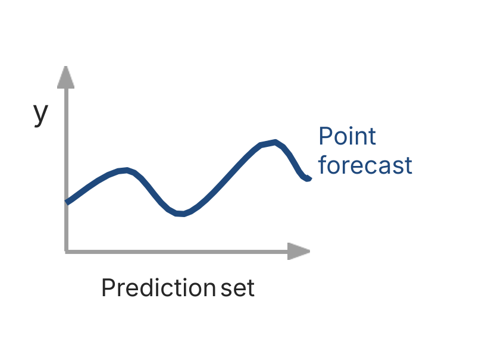
Forecast with a point forecast model
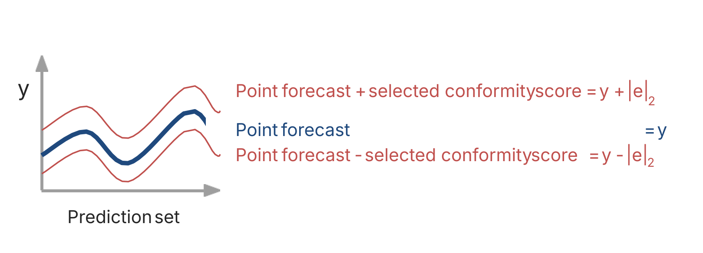
Add prediction interval based on conformity scores
Conformal prediciton using ConformalForecast in R
Pick one series and prepare data
Code
bahia <- brazil_dengue_tsb |>
filter(location == "Bahia") |>
arrange(time_period) |>
as_tibble()
y_all <- ts(bahia$disease_cases, frequency = 12)
xreg_all <- bahia |>
select(rainfall, mean_temperature) |>
as.matrix()
# Define split dates
train_end <- yearmonth("2014 Dec")
calib_start <- yearmonth("2015 Jan")
calib_end <- yearmonth("2015 Dec")
test_start <- yearmonth("2016 Jan")
test_end <- yearmonth("2016 Dec")
idx <- bahia$time_period
i_train_end <- max(which(idx <= train_end))
i_calib_end <- max(which(idx <= calib_end))
i_test_start <- min(which(idx >= test_start))
i_test_end <- max(which(idx <= test_end))
# train length used as rolling window size in cvforecast
window_len <- i_train_end
# series up to end of calibration (train + calibration)
y_train_calib <- ts(bahia$disease_cases[1:i_calib_end], frequency = 12)
xreg_train_calib <- xreg_all[1:i_calib_end, , drop = FALSE]Create forecast function for cvforecast (ARIMAX via forecast::Arima)
“Calibration” residuals via cvforecast across the 12 calibration months
Code
# This produces 1-step-ahead errors for each month in the calibration year.
fc_cal <- cvforecast(
y = y_train_calib,
forecastfun = farimax_1step,
h = 1,
level = 95,
forward = FALSE,
window = window_len,
initial = 1
)
# absolute errors (conformity scores)
scores <- abs(as.numeric(fc_cal$ERROR))
q_95 <- quantile(scores, 0.95, na.rm = TRUE)Conformal prediciton using ConformalForecast in R
Forecast the 12-month test period (fit on train+calib, forecast test)
Code
# Fit on all available up to calibration end:
fit_final <- forecast::Arima(
ts(bahia$disease_cases[1:i_calib_end], frequency = 12),
xreg = xreg_all[1:i_calib_end, , drop = FALSE]
)
fc_test <- forecast::forecast(
fit_final,
h = (i_test_end - i_test_start + 1),
xreg = xreg_all[i_test_start:i_test_end, , drop = FALSE]
)
test_dates <- bahia$time_period[i_test_start:i_test_end]
yhat <- as.numeric(fc_test$mean)Visualise the conformal prediction intervals
Code
plot_fc <- tibble(
time_period = test_dates,
point = yhat,
lower_95 = pmax(0, yhat - q_95),
upper_95 = yhat + q_95,
actual = bahia$disease_cases[i_test_start:i_test_end]
)
history <- bahia |>
filter(time_period >= yearmonth("2014 Jan") & time_period <= calib_end)
ggplot() +
geom_line(
data = history,
aes(x = time_period, y = disease_cases, colour = "Actual"),
linewidth = 1.75
) +
geom_ribbon(
data = plot_fc,
aes(x = time_period, ymin = lower_95, ymax = upper_95, fill = "95% Conformal PI"),
alpha = 0.2
) +
geom_line(
data = plot_fc,
aes(x = time_period, y = point, colour = "Point Forecast"),
linewidth = 1.75
) +
geom_line(
data = plot_fc,
aes(x = time_period, y = actual, colour = "Actual"),
linewidth = 1.75
) +
scale_colour_manual(
name = NULL,
values = c(
"Point Forecast" = "#0072B2",
"Actual" = "black"
)
) +
scale_fill_manual(
name = NULL,
values = c("95% Conformal PI" = "#0072B2")
) +
guides(
colour = guide_legend(order = 1, override.aes = list(linewidth = 1.6)),
fill = guide_legend(order = 2)
) +
labs(x = "Month", y = "Disease Cases") +
theme_minimal(base_family = "Inter", base_size = 36) +
theme(
panel.border = element_rect(color = "lightgrey", fill = NA),
legend.position = "right"
)Conformal prediciton using ConformalForecast in R
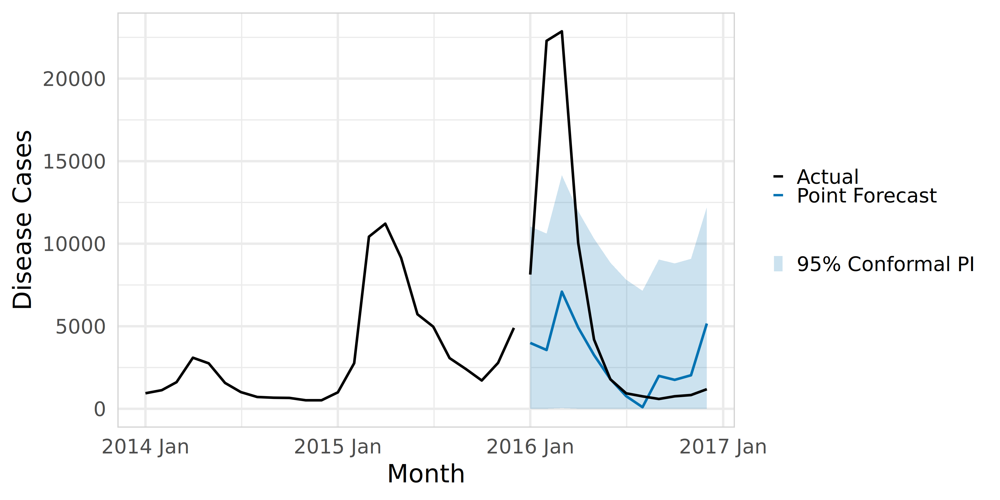
Now it is your turn.
Key Assumptions
- Exchangeability: The calibration data (recent past) looks statistically similar to the test data (near future).
- Symmetry: Standard “Split Conformal” produces symmetric intervals (constant width), though advanced versions (CQR) can handle asymmetry.
- Best for: Complex “Black Box” models (AI/ML) and strict policy requirements.
| Pros | Cons | When to Select |
|---|---|---|
| Model Agnostic: Works with any model (Neural Networks, Random Forest, XGBoost). You do not need to understand the math inside the “black box”. | Data Hungry (Splitting): Requires a separate “Calibration Set” withheld from training. In short time series, sacrificing 20% of data for calibration is painful. | Using Machine Learning: When you are using complex non-linear models where calculating a standard deviation (\(\sigma\)) is impossible. |
| Finite-Sample Guarantee: Mathematically guaranteed to cover the true value \((1-\alpha)\%\) of the time, regardless of the underlying distribution. | The Drift Problem: Relies on “Exchangeability.” If the climate shifts effectively (Distribution Drift), the calibration data no longer represents the future, and coverage fails. | Regulatory/Policy Compliance: When you must prove to stakeholders that your intervals are statistically valid (e.g., “guaranteed 90% coverage”). |
| Distribution Free: Does not assume errors are Normal, Poisson, or Skewed. It constructs intervals based purely on empirical past performance. | Constant Widths: Basic Split Conformal produces a fixed-width “tube” that doesn’t adapt to local volatility (unless using advanced Adaptive Conformal). | Complex Distributions: When data is messy, multi-modal, or refuses to fit any standard statistical distribution. |
Resources
Any questions or thoughts? 💬